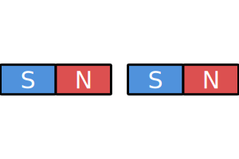
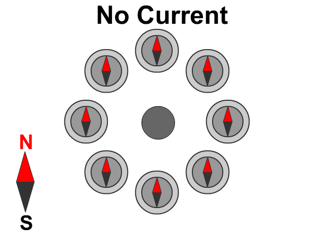
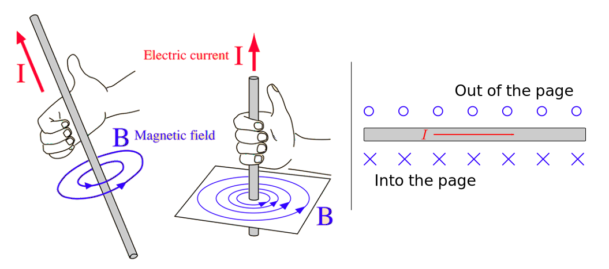

University Physics

Magnetism
Demo of Magnet
Examples of Magnets
- Bar
- Horseshoes
- Spherical
- Refrigerator Magnets


Magnet Properties
Regardless of shape, ALL magnets have two sides.
Participation Question
For each image below, determine if the forces areattractive, repulsive, or no force.
|  |
Magnetic Field Lines
Magnets create forces through magnetic fields, $\vec{B}$.
- The fields "flow" from N-pole to S-pole.
- Density of lines $\leftrightarrow$ strength of field
- $\vec{B}$ is measured in Teslas (T) or Gauss (G), $\quad$ 1G=$10^{-4}$T
Earth's Magnetic Field
Earth has a magnetic field that weroughly estimate as a bar magnet.

$|\vec{B}_\text{Earth}|=[25,\,65]\mu$T
Earth's Moving B-field

Earth's magnetic field undergoes a reversal anywhere between
0.1 and 50 million years.
- 183 reversals in last 83 million years
- Average 300,000 years
(but wide variance) - Last reversal occured 780,000 years ago.
Earth Pole Terminology


-
(A) Geographic Poles
A1 - North Pole
A2 - South Pole -
(B) Geomagnetic Poles
B1 - North Pole
B2 - South Pole -
(C) Magnetic Poles
C1 - South Pole
C2 - North Pole
Link between Electric and Magnetic Field
- $\vec{E}$ and $\vec{B}$ fields have a lot of similarities
- $\vec{B}$: like poles attract and unlike poles repel
$\vec{E}$: like charges attract and unlike charges repel
Charges can be positive or negative,
but magnetic poles can never be separated.
Currents and Magnetic Fields
In 1820 Hans Christian Ørsted demonstrated electric currents creating magnetic forces.
Right Hand Rules

Drawing 3D Vectors
Magnetic Forces
PQ: Proton RHR
In each case shown below, the magnetic field strength is
$|\vec{B}|$ = 9.7 T
and a proton is moving at $v=3.35\times10^5$m/s.
What is the direction and magnitude of the magnetic force on the charge?

PQ: Proton RHR (sol)
For (A) and (B) cases, the velocity and magnetic field are $90^\circ$.
$=5.2\times10^{-13}\text{N}$
PQ: Velocity Selector
Charge $Q=18$nC is fired into a region with a
uniform magnetic field $|\vec{B}|=0.63$T out of the page
and a uniform electric field $|\vec{E}|=9.30\times10^6$V/m
pointing in the upward direction.

PQ: Velocity Selector (sol)
PQ: Force on charge
Consider a uniform magnetic field pointing into the page at every point inside the boxed region. What is the direction of the force on a positive charge at the marked points?

PQ: Force on charge (sol)

PQ: Mass Spectrometer
Krypton atoms of net charge $Q=+1.602\times10^{-19}$C enter a mass spectrometer composed of a velocity selector with an electric field strength 212V/m and a magnetic field of 64.70mT. The Kr atoms then enter a region of space of uniform magnetic field, also 64.70mT. The magnetic fields bends the Krypton gas into circular arcs and hits a photographic plate. Two distinct arcs can be seen, which means we have two isotopes of Kr. The two arcs are separated by $d=4.20$mm on the plate. What is the mass difference between the two isotopes?